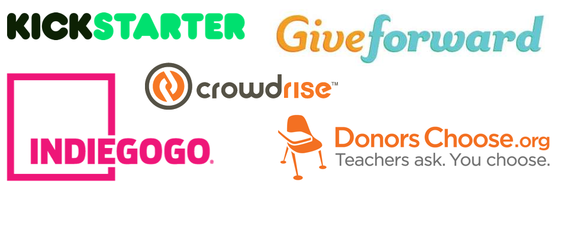
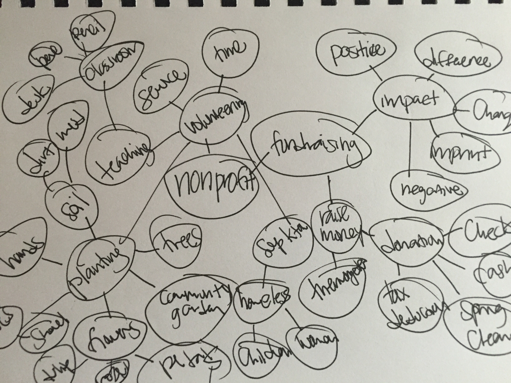

I was tasked with designing a web application for people to crowdfund donations for charities and foundations, and allow people to donate to specific causes. Because my college and law school experiences instilled in me a commitment to social justice, I was eager to honor that commitment in designing this fundraising platform tackling two specific barriers to donation: trust and approachability.
The Problem
One easy way for a person to participate in creating change in the world is by donating their money. However, while someone may believe in the mission or the goals of an organization, she knows very little about how her donation would be used thus creating apprehension.
The Solution
Transparency. Let potential donors see prior to donating exactly how funds will be used. Changeseed is a trustworthy and approachable take on charitable giving that lets potential donors see how their money will be used and see how they can make an impact by donating as little as a few dollars.
The Process
Get to Know the User
Craft the Survey
The first crucial step in developing this fundraising platform would be to understand the potential users. Especially given my strong feelings on the topic, this step was very important to keep my biases in check. With this survey the key things I wanted to understand were:
- Attitudes towards donating;
- What types of fundraisers users donate to;
- Perceived barriers to donating; and,
- Motivations for donating.
Survey Says
The survey was distributed across social media and online forums and completed by 67 people. The responses from the 65 individuals answered “yes” to “I believe I can make an impact by donating my time or money to a cause I believe in.” were used to uncover the insights that informed the development of this platform. In analyzing the survey results the following was revealed:
- 67% say they have donated in the past year, but wish they could donate more than they did;
- 75% would prefer their money go to local organizations remedying social issues in their hometown/local area;
- 60% make one-time donations when they can or when convenient, as opposed to donating regularly; and,
- Regarding barriers to donating: 68% indicated a barrier to donating was “not trusting how funds would be used” and 48% felt as if they had to donate a certain minimum amount of money to make a difference.
Personal connection highly affects the organizations that individuals donate to:
- Individuals are donating to organizations that affect themselves or people they know (65%);
- They are donating to organizations they have volunteered with in the past (57%); and,
- They are donating to organizations that their friends or family work or volunteer with (42%).
One key feature of the survey was to ask users about what kind of scenarios or information would need to be presented to them to make them more likely to donate.
- 67% say they have donated in the past year, but wish they could donate more than they did;
- 75% would prefer their money go to local organizations remedying social issues in their hometown/local area;
- 60% make one-time donations when they can or when convenient, as opposed to donating regularly; and,
- Regarding barriers to donating: 68% indicated a barrier to donating was “not trusting how funds would be used” and 48% felt as if they had to donate a certain minimum amount of money to make a difference.
PERCENTAGES ABOVE ARE BASED ON A COUNT OF THE RESPONDENTS WHO RESPONDED WITH A SCORE OF 8 OR HIGHER.
Survey Result Inferences
Taking these results together a major theme arises. While there mistrust is the highest cited reason as a barrier to donation, respondents were also most open to making donations where they either had a personal connection to the organization or cause, or know exactly how funds will be used.
Understand the Competition
Crowdfunding has cemented its role in bringing ideas of all kinds to life. The market has a number of different players each with its own twist. While Kickstarter is viewed as the leader in this space, it doesn’t allow for fundraising for charitable campaigns. GiveForward allows donors a variety of ways to donate such as purchasing items or meals. Teacher favorite DonorsChoose uses a “proposal” model that requires public school teachers to give details on how money will be spent, but is a platform only available to public school teachers. It was clear I needed to dig deeper into these and other competitors to identify the space that my platform could fill. View my competitive analysis here.
Develop Focus: User Stories and User Flows
These results of my user survey confirmed a need to create a platform that donors can trust and my competitive analysis revealed guidance on how I could do that. The platform would require those seeking to raise money to provide a specific goal statement as well itemize how funds will be used. The platform would be open to anyone and everyone looking to do good work. Additionally, to assist with making donating more accessible (addressing the concern over feeling like a certain minimum amount) donors should be able to make donations at low dollar amounts.
To accomplish this I created a prioritized list of user stories for the development of this platform. These user stories would need to be turned into user flows to describe and understand how a potential donor/user would move through the platform.

View ChangeSeed user flows up close here.
Create an Identity
Equipped with an understanding of the goals of this platform and the attitudes of the end user it was time to develop a brand identity that reflected that spirit. Ultimately, the users of this product are generally altruistic and believe they can make a difference with their dollars. They believe in doing good and this site needed to be inviting and approachable. However, at the same time it needed to exude trustworthiness. As a result, I decided in a simple and direct name: ChangeSeed. “Change” would have double meaning: (1) relating to making a difference and (2) meaning small amounts of money; and, “Seed” would reference how that small amount of money or difference would later grow into something bigger.

That tension created by emphasizing both trustworthiness and approachability was greatly impactful when deciding the typefaces for this product. Abril Text is the serif font used for the word mark of ChangeSeed’s logo as well the body copy for the platform. This typeface is contemporary and comforting, in addition to easy on the eyes when reading. It is the type of typeface you can settle into as you read about how you should donate your money.
Contrasting Abril Text I selected Gibson Semi-Bold for all heading levels. Friendly and sturdy, this typeface embodies the all the good feelings related to doing something you know will make a difference.
Images
Are
Coming
Soon
The color palette would need to comprised of colors that showed this juxtaposition of trustworthiness and approachability. As a money donation platform shades of green and gold would serve to support this brand.
Design the Conversation
Low Fidelity Wireframes
Now with my brand created and my user research completed I created the initial low fidelity wireframes for ChangeSeed. While my user flows gave me the structure needed to think about exactly how a user would move through the site, this phase of ChangeSeed challenge my ability to organize and prioritize information for the web. Because trust must be established very methodically and deliberately, this was a very important test in information architecture.
Bold images would be used to draw in potential donors but ultimately it is the organization of the information on each campaign that would convert users into donors. Low fidelity wireframes were created using Balsamiq.
Take a closer look at all the low-fidelity wireframes here.
High Fiedelity Wireframes
With a better understanding of the design of ChangeSeed I took to Sketch to create high fidelity wireframes to solidify the look and feel of the platform. I was able to create a high-fidelity prototype in inVision for testing and design feedback before taking the platform to development.
Code the Design to Life
One of the great rewards of ChangeSeed were the skills I gained from bringing this project to life using Zurb’s Foundation framework and Sass. With a basic understanding of programming logic I was excited to dig into Sass and see how much it would speed up my workflow. In addition to Bloc’s offerings I supplemented with tutorials from Treehouse and Code School. Once I overcame some of the initial hurdles of differentiating mixins, functions and extends I was hooked! Thank you, Hampton Catlin.
Foundation, on the other hand was a different story. It was quick to pick up, but a love hate relationship quickly developed. While Foundation’s built in components made general development fast, I found myself growing frustrated with the ability to customize those component to build out ChangeSeed as I had designed and envisioned. I did enjoy and appreciate it’s integration with Sass and the ability to get up and running with a responsive grid quickly, but found myself still having to write a lot of additional styles to get ChangeSeed as close to its intended design as possible.
Conclusions
ChangeSeed was a massive undertaking with massive rewards. More on that soon.